Toyota Corolla KCP 139K Front-End Collision Repair 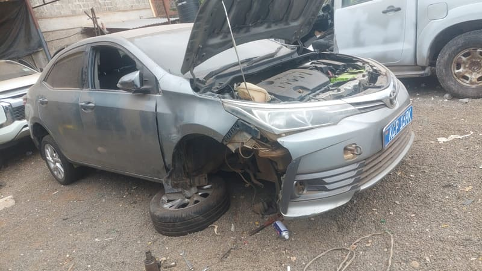 Before After 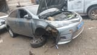 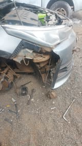 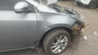 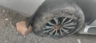 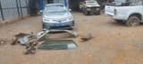
Land Cruiser Prado KDH 089E Side Panel & Tyre Replacement 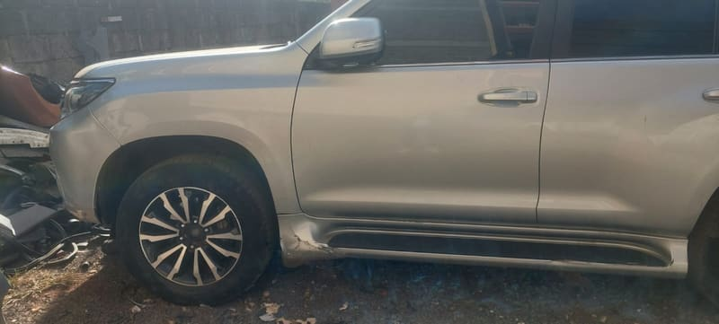 Before After 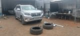 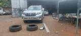
Toyota Axio KDP 882F Front Panel Replacement 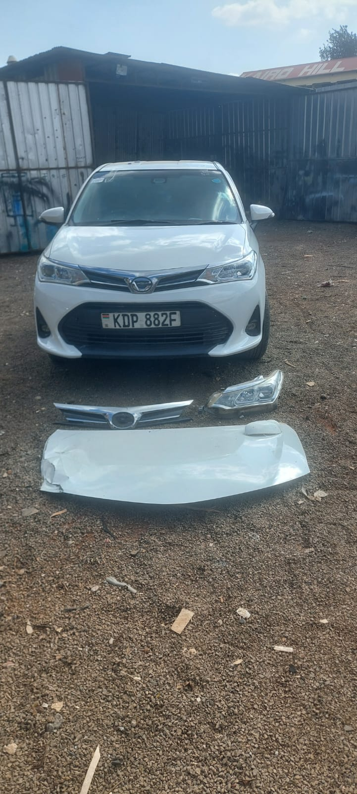 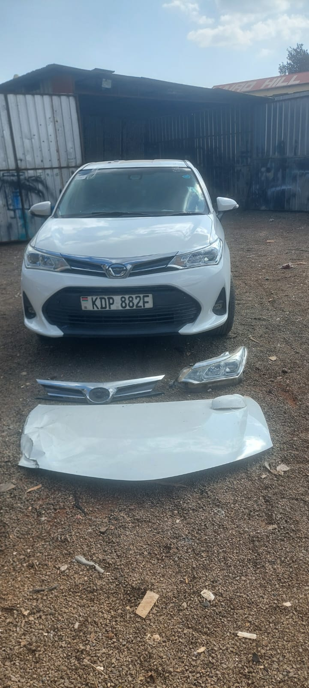 Completed 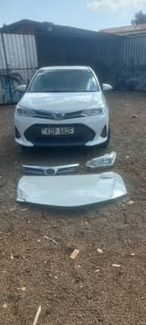 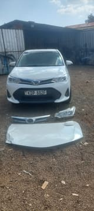